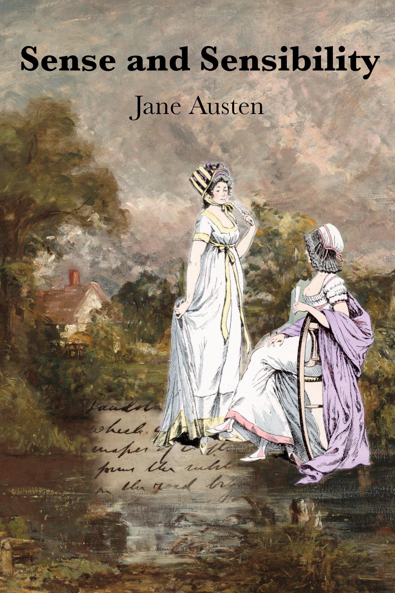

Image Editing
I explored vector and raster image editing using Inkscape and GIMP. I created a vector logo for Uncommon Edit, a fictional publishing services company, and designed a book cover for Jane Austen's Sense and Sensibility. I also created an AI-generated version of the book cover to compare traditional image editing with an AI-assisted approach.
Vector Logo: Uncommon Edit
I used Inkscape to create a vector logo for Uncommon Edit, a fictional company offering editing, book design, and consulting services to self-published authors. I wanted the logo to have a traditional appearance, so I used three books in burgundy, navy, and gold, along with Georgia, a serif font. I created the design using vector shapes and text, then adjusted the arrangement, spacing, and colors before exporting the finished logo.
Book Cover: Sense and Sensibility
GIMP Book Cover

I used GIMP to design a book cover for Jane Austen's Sense and Sensibility. I combined John Constable's landscape painting The White Horse, an antique handwritten manuscript, and an illustration of two women in period clothing. I used layers to arrange the images and removed the original background around the women so they would appear in the landscape.
This was my first time using GIMP, and I spent considerable time refining the edges around the women so they wouldn't look like stickers placed over the painting. After finally getting the edges the way I wanted, I realized I'd accidentally rotated the image and had to figure out how to correct it. Although I struggled with some of the tools, I learned a lot about working with layers, selections, and image composition.
AI-Generated Book Cover
To explore an alternative approach, I used ChatGPT to create a book cover for Jane Austen's Sense and Sensibility. I provided instructions about the book's themes and asked AI to apply design principles such as visual hierarchy, scale, and color theory. The resulting image was created much more quickly than my traditional cover.
Although AI made the process easier, I learned more by creating the images myself in Inkscape and GIMP. I also preferred my traditional book cover, even though the AI-generated version looked more polished. This experience also showed me why it's important to review AI-generated work rather than assume the design is good just because it looks polished.